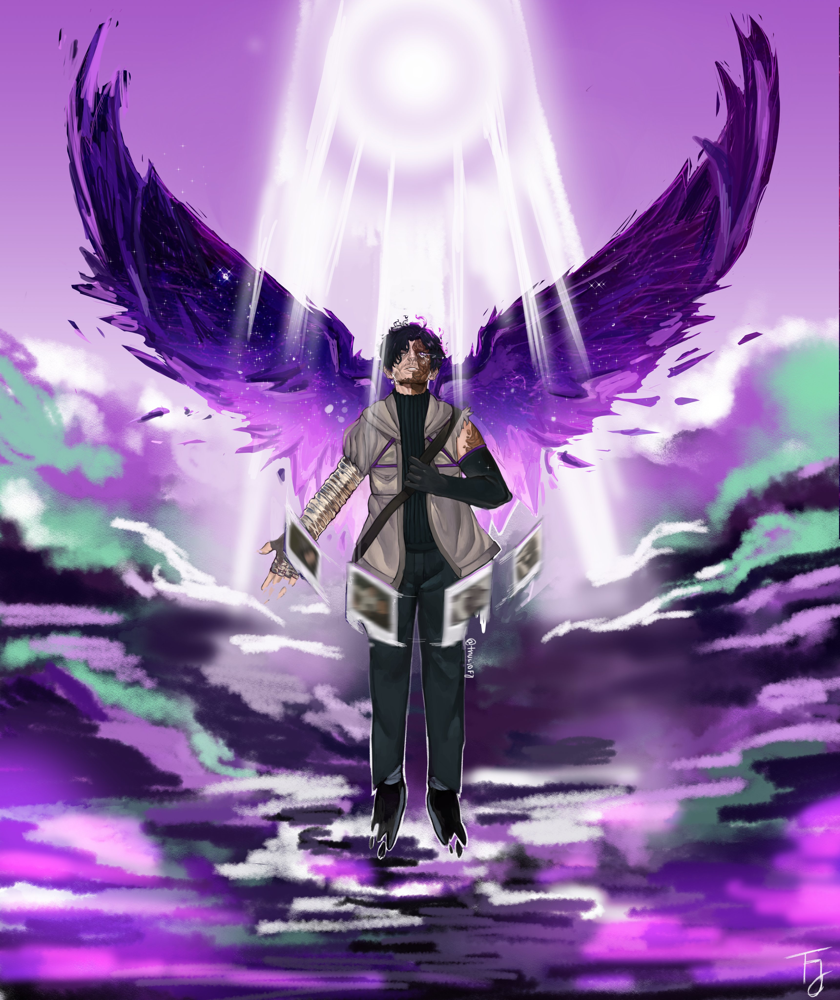

Arthur, Joui e Kaiser foram os principais protagonistas da serie Ordem paranormal, sendo os personagens mais lembrados e iconicos, tendo em vista seus diversos feitos durante toda a obra, como sendo capazes de derrotar inimigos que nunca antes foram pensados que poderiam ser derrotados, cada um exemplificando um conceito diferente, Arhur a esperança, Joui o combatente, e Kaiser O heroismo
Joui Jouki nasceu em 17 de novembro de 1996,m Tóquio, Japão, de um homem japonês e uma mulher brasileira ainda sem nomes revelados. Desde criança Joui gostava de ginástica no geral e acabou seguindo essa carreira, tendo grande aptidão para o atletismo e evoluindo a ponto de competir em eventos nacionais e internacionais, onde ganhou diversas medalhas. Viajou o mundo pelo esporte, conhecendo e fazendo amizade com diversas pessoas. Seus pais, no entanto, nunca o apoiaram em sua escolha de carreira, considerando seu estilo de vida uma quebra com as milenares tradições de seu país.
Numa viagem ao Brasil para treinar com seus três melhores amigos - Rodolfo, Taka e Mateo - o grupo foi atacado por uma criatura sobrenatural, enquanto eles estavam próximos ao Cemitério de São Paulo. Apenas Joui sobreviveu, após ter sua vida salva por Elizabeth Webber e Thiago Fritz, pelos quais desenvolveu uma eterna gratidão. Com os únicos a quem era próximo mortos, decidiu dedicar sua vida a ajudar a causa de Liz e Thiago, e motivado por não querer que outros passem pelo que ele passou, Joui é treinado pelos dois, e assim, entra para a Ordo Realitas.
Numa viagem ao Brasil para treinar com seus três melhores amigos - Rodolfo, Taka e Mateo - o grupo foi atacado por uma criatura sobrenatural, enquanto eles estavam próximos ao Cemitério de São Paulo. Apenas Joui sobreviveu, após ter sua vida salva por Elizabeth Webber e Thiago Fritz, pelos quais desenvolveu uma eterna gratidão. Com os únicos a quem era próximo mortos, decidiu dedicar sua vida a ajudar a causa de Liz e Thiago, e motivado por não querer que outros passem pelo que ele passou, Joui é treinado pelos dois, e assim, entra para a Ordo Realitas.
Com a destruição de Santo Berço e o sacrifício de Thiago Fritz, Joui passa por um treinamento durante meses para aprender a usar um arco e flecha e aprimorar suas habilidades com lâminas, na tentativa de diminuir sua obsessão por armas de fogo adquirida na missão anterior. Em algum momento, Joui acaba confrontando e prendendo Nathaniel, um Ocultista relacionado com a Seita das Máscaras,[32] em circunstâncias desconhecidas.[33] Antes dos eventos de Ordem Paranormal: Desconjuração, Joui observava o Edifício Novo Amanhecer para garantir a segurança de Elizabeth Webber, sem que ela soubesse, enquanto ela investigava mais sobre a Desconjuração.[34] Mesmo sempre ocupado, ainda assim visita Arthur, Kaiser e Ivete, pessoas que ele considera sua família.
Cesar Oliveira Cohen nasceu em 5 de janeiro de 1990,[17] em Manaus, Amazonas, filho de Cláudia Oliveira, e Cristopher Cohen, um ator e dublê americano, se mudando para São Paulo logo após seu nascimento. Posteriormente, seu pai voltou para os Estados Unidos, deixando Cesar ainda com 12 anos e sua mãe no Brasil. Cresceu tomando ressentimento de seu pai, que, em sua percepção, nunca estava presente.
Quando criança, desenvolveu um certo grau de fobia social levando a suas crises de pânico, como na vez que, após flagrar ele e seu melhor amigo Bruno perdendo de propósito no xadrez, o professor de educação física fez ele e seu colega jogarem uma partida de xadrez na frente de toda a turma, ameaçando dar uma suspensão a quem perdesse, Cesar ficou extremamente nervoso, mas não pela ameaça, e sim pela alta quantidade de pessoas o observando. Essa fobia o fez se isolar em casa e encontrar refúgio na tecnologia. Devido ao contato frequente com computadores, tornou-se um programador e hacker muito habilidoso. Ao longo do tempo, foi capaz de superar e, se tornando capaz de interagir socialmente sem qualquer problema, apesar de preferir ficar em casa quando pode. Durante um momento de sua adolescência, ficou viciado em remédios para dormir, os quais ainda fazia uso quando adulto, porém de forma mais controlada.
Antes de se juntar a Ordem, Cesar vivia invadindo sistemas de empresas como bancos e ganhava dinheiro ajudando-as a fortalecê-los. Descobriu a existência do mundo paranormal e da Ordem enquanto investigava um fórum misterioso na Deep Web no qual havia indícios de pessoas desaparecendo por conta de um símbolo misterioso, que as fazia enlouquecerem. Enquanto investigava esse mesmo fórum, ele conheceu o hacker Samuel, que acabou recrutando-o para a Ordo Realitas por causa de suas habilidades investigativas.
Cesar foi um dos investigadores escolhidos para o Caso de Carpazinha, em sua primeira missão, com outros 4 membros: seu pai Cristopher Cohen, Elizabeth Webber, Joui Jouki e Thiago Fritz. Eles se dirigem até a cidade de Carpazinha no Rio Grande do Sul para investigar o desaparecimento repentino da Equipe Kelvin, uma das melhores equipes da Ordem, que buscava pistas sobre a misteriosa morte de um homem chamado Rafael Montes. Na semana que passaram investigando o caso, Cesar perdeu seu pai, viu um civil perder toda a sua família de forma brutal e quase matou Joui após ser controlado por uma criatura. Porém, mesmo com todos esses eventos traumáticos, a equipe descobriu o segredo de Carpazinha: uma cidade inteira de inocentes conectados a uma Entidade de Morte extremamente poderosa. Após presenciar o sacrifício de Thiago, seu amigo e irmão de consideração, Cesar e os outros entraram no coração de Santo Berço, uma Caverna. Lá descobriram o paradeiro da Equipe Kelvin e presenciaram uma aberração monstruosa que foi derrotada pelo último ato heroico de Thiago Fritz. Cesar sai de lá completamente destruído e demonstrou esconder seu sofrimento o máximo que pôde para auxiliar os membros restantes da equipe a saírem daquele inferno que a cidade se tornou após a destruição da entidade. A visão fora da caverna destruída foi enlouquecedora: dezenas de inocentes gritando, queimando e morrendo brutalmente no meio da floresta em chamas. Esse momento, muito provavelmente, foi traumatizante para a vida de Cesar.
Cesar vai morar com Arthur e Ivete em São Paulo, sendo visitado por Joui Jouki quando pode. Durante esse tempo, cria o C.R.I.S, e continua atuando ativamente na Ordem, se tornando o líder da Equipe de Pesquisa. Porém, como consequência de seus traumas do antigo caso, começa a fumar e ter crises de pânico com maior frequência. Ele adquire o costume de tirar e colecionar fotos polaroides para ajudá-lo a controlar seus momentos de ansiedade. Além disso, adota um codinome: Kaiser.
Elizabeth Webber e seu aprendiz Gustavo Dohmer desapareceram há duas semanas. Seguindo os últimos traços deixados pela mulher, Kaiser juntamente com Arthur, Erin, Fernando, Tristan, Beatrice e, posteriormente, Joui vão em sua procura. O grupo encontra evidências dos últimos estudos de Liz, que indicavam uma ligação entre a morte de Leonardo Gomes, o caso de Santo Berço e a Ordem da Desconjuração. Preocupados com a vida da amiga, Kaiser, Joui e Arthur não poupam esforços para encontrá-la com o auxílio de seus novos companheiros. Eles enfrentam os Ocultistas do Edifício Novo Amanhecer, e, com as informações conseguidas e o auxílio de um novo aliado: Dante, a equipe encontra o Orfanato que Elizabeth estava mantida presa. Kaiser fica feliz por encontrar sua amiga viva, apesar das tatuagens feitas na pele da moça. Mesmo com sua ansiedade, Kaiser abraça Liz e diz que está feliz de vê-la bem. Na hora da fuga, o grupo enfrenta diversos monstros e Kaiser acaba gravemente ferido após um arremesso errôneo de uma granada numa criatura: a Degolificada. Depois da batalha, Kaiser desacordado é tratado por Liz e, apesar das dores, se sente aliviado de não ter machucado nenhum de seus amigos na explosão. Na porta do Orfanato, o grupo é interceptado pelos Escriptas e Gal, os ocultistas responsáveis por sequestrarem Liz. No encontro, os agentes são detidos facilmente pelo grupo, claramente muito mais fortes que eles. Com todos paralisados, Gal assassina Elizabeth com a katana de Joui na frente de todos. Kaiser é obrigado a assistir à cena impossibilitado de fazer qualquer coisa a não ser observar. Os ocultistas prendem todos no Orfanato e Kaiser é visitado por seu amigo de infância atualmente aliado aos Escriptas: Bruno. Os dois discutem sobre o ocorrido e, após entregar um peão de xadrez ao Kaiser, ele dá dicas da próxima localização da investigação: a "Mansão Endiabrada".
O grupo, após ser resgatado por Erin e Fernando, realiza um velório simbólico para Liz no cemitério, e após retornarem novamente para a base para discutir com o Senhor Veríssimo sobre Kian, eles são invadidos pela Seita das Máscaras. Após o grupo conversar com as máscaras, todos acordam no dia seguinte, voltando para a base para investigar, com Kaiser percebendo que somente o grupo lembra do ocorrido.
Eles vão até a mansão e descobrem que essa foi a casa em que Leonardo Gomes "Kian" foi adotado por apenas alguns meses antes de retornar ao Orfanato. A equipe então investiga a mansão e enfrentam diversas entidades. Duas delas atormentavam Kaiser a semanas: o Viajante e o Espreitador. A primeira fez as fotos de Kaiser serem alteradas, tendo os rostos apagados, assim, devorando suas memórias. Após sua primeira aparição, a criatura matou Tristan e fez Kaiser perder a memória de quem estava nas fotos. A batalha contra o Viajante, além de matar dois policias inocentes, transformou Beatrice num Existido, após Orpheu ser morto. Kaiser recuperou as memórias depois do monstro ser derrotado. A segunda criatura estava atormentando Arthur e Ivete também, sendo descoberto que sua gata, Jennifer, foi marcada pela entidade, que estava observando os três desde então. A luta contra o Espreitador foi intensa, resultando em Joui, Arthur e Ivete bastante feridos, além de Kaiser exausto e muito ferido. Mesmo assim, ele conseguiu disparar um tiro certeiro e matar a criatura. Depois desses embates, Kaiser começa a se perguntar o que é ser um herói, após ver como Tristan agia e como ele era tratado pelas pessoas ao seu redor, chegando a conclusão de não ser apto para ser um. Apesar de Joui tentar convencê-lo do contrário, Kaiser não parece convencido e começa a agir com estranheza. Ele tenta nitidamente se mostrar mais amigável e sociável, o que gerou piora no seu quadro de sociofobia, fazendo-o manifestar tics nervosos e crises de pânico. Eles enfrentam mais alguns monstros na casa, dentre eles os Escutados e a Mulher Afogada. Em determinado momento, os cigarros de Kaiser acabam e ele começa a ter uma crise. Joui tenta ajudá-lo, mas Kaiser fica irritado e afirma saber que ele é "estranho" e que ninguém se importaria se ele morresse. Após uma intensa discussão, Joui diz que Kaiser é como um herói para ele, pedindo para que seu amigo cuide do grupo quando Joui não estiver mais lá. Após terminar a investigação na mansão, eles descobrem sobre um antigo morador ainda vivo: Frederico Mare, e vão interrogá-lo. Com o relato de Fred, eles descobrem sobre Álvaro Augusto e sua ligação com Leonardo Gomes e a Desconjuração. Kaiser demonstrou ficar bastante abalado com a situação mental de Frederico, afirmando que o homem vivia uma mentira e que isso era muito ruim. Ele deu a ideia de tentar fazer a vida de Frederico voltar a ter algum sentido ao lado da Ordem, o que deixa Joui orgulhoso. Durante a investigação na mansão o grupo acaba conhecendo um grupo de adolescentes que sabiam de coisas paranormais que aconteceram no lugar: Cassiano, Hugo, Eduarda e Tim.
Eventualmente, Arthur recebe uma ligação das crianças vizinhas da Mansão Endiabrada dizendo haver algo de errado acontecendo. Por estarem preocupados, o grupo corre para o local, encontrando diversos Existidos e sangue por todo o lado, mas principalmente, duas figuras que se destacavam na névoa do local: Henri e Enpap-X. Henri tem um enigmático diálogo sobre a "Ordem da Desconjuração", logo após, soltando a criatura na direção dos agentes. Ocorre um confronto brutal contra o monstro, no qual Kaiser o enfrenta na linha de frente, por isso, ele e Erin saem extremamente feridos. Todos voltam sua atenção a Erin que estava agonizando no chão e, com isso, Henri se aproxima e pega Kaiser de refém com a intenção de matá-lo. No momento da execução, Bruno aparece e convence Henri a deixá-lo matar o antigo amigo. Bruno, então, surpreende todos atacando Henri despercebido e ajudando Kaiser a se curar e se levantar. Kaiser, ainda em choque tenta entender o que aconteceu, seu amigo de infância então fala que o último dia da Desconjuração havia chegado, e que ele decidiu trair os Escriptas e ajudar a Ordem na luta contra Kian. Eles se recuperam com a ajuda de Clara, mas Henri se levanta de surpresa e a mata de forma perturbadora, enquanto ri descontroladamente. Ocorre uma batalha intensa e Henri, ferido, utiliza um ritual para ligar a vida de Arthur, Kaiser e Luciano a ele. Ameaçando cortar sua própria garganta, após entenderem o perigo que o Escripta proporcionava, os agentes permitem que ele fuja. A equipe se reúne e vai até à Mansão, entrando no esgoto desta, onde eles acreditam que os adolescentes estão.
Após lidarem com Sukkalgir e Tirigan nos Corredores, Kaiser e os outros agentes retornam até a Base da Ordo Realitas, após transcender com 50% de Exposição Paranormal e descobrir a verdade sobre si mesmo, assim a "Força D" se prepara para impedir a Desconjuração, e Kaiser se despede de Ivete, deixando os adolescentes em segurança no "Suvaco Seco" e prometendo voltar para comemorarem juntos. Eles vão até o Orfanato Santa Menefreda, onde encontram Gal, Kian e Tim, além dos corpos de Beatrice, Orpheu, Tristan e Elizabeth pendurados numa árvore. A equipe batalha contra Gal, que se mostra extremamente ágil e poderoso. Kaiser presencia a morte de Erin, que se explode ao ser atacada fatalmente pelo ocultista, assim como as mortes de Alexia e Samantha, duas das agentes que vieram para reforços. Durante o combate, Gal havia desenhado um símbolo de Transcender no chão, provocando a transcendência de Luciano, fazendo com que Kian retorne como um Marcado. Ele revela seu plano de acabar com todo o paranormal, assassinando cada pessoa que têm conhecimento do mesmo, oferecendo a Calamidade a todos alí presentes. Kian acaba matando Fernando após uma tentativa falha de o converter para seu lado, pretendendo
fazer o mesmo com os agentes restantes. Porém, a Seita das Máscaras, juntamente com Joui, aparecem para salvá-los. Kian, entretanto, realiza um ritual que dissipa a névoa e diminui os efeitos paranormais, atrasando o processo de salvamento da Seita. Kaiser logo percebe que ele é o único que pode anular o efeito do ritual, porém, Kian também percebe e tenta persuadi-lo a não utilizar, falando para ele que era muito mais fácil fugir, já que Joui o colocou no topo da lista de prioridades da Seita, mas Kaiser o interrompe, mandando Kian calar a boca, acendendo seu cigarro e usando o seu ritual de "Cinerária", permitindo que a Seita salve todos os sobreviventes, deixando apenas ele no local, que ficou para trás e manteve o ritual funcionando enquanto o salvamento acontecia, se sacrificando para que os outros sobrevivessem. No fim, sobra somente Kaiser, frente a frente com Kian e Gal. Antes de ser inexistido por Kian, Kaiser fala para ele adicionar na sua profecia que a Ordo Realitas irá pará-lo. Kian puxa todas as fotos de Kaiser, lendo todos os textos atrás delas, e falando que Kaiser só morreu por estar rodeado de pessoas. Ele faz tudo sumir para Kaiser, que no meio do vazio, é inexistido, se proclamando o Angel of the Night enquanto sozinho.
No dia 31 de outubro de 2020, antes de conhecer os novos agentes, Kaiser gravou um vídeo de despedida para Ivete, Arthur e Joui. O motivo de tê-lo gravado foi o medo de partir sem dizer o que verdadeiramente sentia para eles, temendo repetir o erro que cometeu quando seu pai morreu e ele foi incapaz de dizer que o amava de volta. O arquivo do vídeo foi encontrado anteriormente por Arthur, mas ele não foi acessado pelo fato do jovem não possuir a senha. No entanto, após os eventos do 20º episódio de Desconjuração, Arthur encontra uma foto dele com Kaiser, Joui e Ivete com a blusa dos Gaudérios Abutres e vários desenhos a mão representando a mãe de Cesar, Cristopher, Liz e Thiago. No verso dessa foto, Arthur encontra a senha do vídeo e consegue acessá-lo, se emocionando com as palavras de Cesar, aonde ele dizia que seus amigos se tornaram a luz de sua vida sem sentido. Arthur se despede chorando, com muita falta de seu irmão.